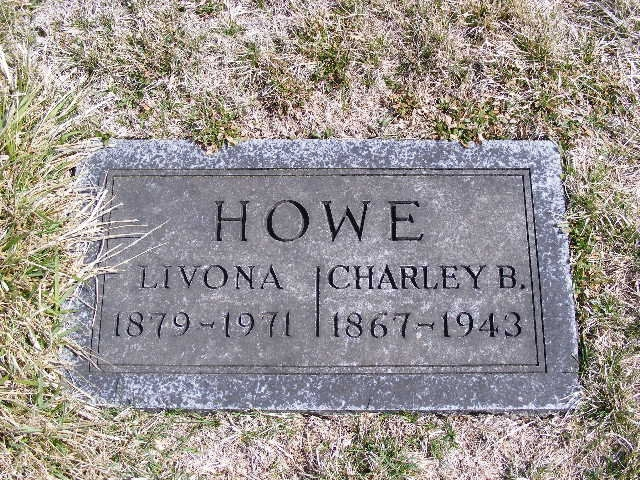
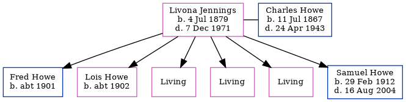

Livona Howe (née Jennings) 1879 - 1971
[ Home ] | [ Calendar ] | [ Surnames Index ] | [ Errors ] | [ Family History ]Livona Jennings, the wife of Charles Benjamin Howe (the third cousin three-times-removed on the mother's side of Nigel Horne), was born in Platte, Missouri, USA on 4 Jul 18791,2,3 and married Charles (with whom she had 6 children: Fred L, Lois M, Ruby M, Flora E, Elsie L and Samuel Noble, along with 3 surviving children) in Plattsburg, Clinton, Missouri, USA on 12 Jul 1899.
During her life, she was living in Gentry, Missouri, USA on 1 Jan 19202; and in Jackson, Missouri on 1 Apr 19303.
She died on 7 Dec 1971 in King City, Missouri and was buried there after 7 Dec 1971.
Children
- Fred L was born c. 1901
- Lois M was born c. 1902
- Samuel Noble was born on 29 Feb 1912
Citations
- Social Security Death Index - Findmypast
- US Census 1920 - Findmypast (was age 40 and the wife of the head of the household)
- US Census 1930 - Findmypast (was age 50 and the wife of the head of the household)
Media
Charley Howe - Livona Jennings - headstone

Social Security Death Index - USBMD/SSDI/495544567
1930 US Census Transcription - USC-1930-004951776-00240-045
1910 US Census Transcription - USC-1910-004972619-00519-033
1920 US Census Transcription - USC-1920-004966297-00807-098
1910 US Census Transcription - USC-1910-004972619-00519-034
1920 US Census Transcription - USC-1920-004966297-00807-099
1930 US Census Transcription - USC-1930-004951776-00240-046
Family Tree
Map
Generated by ged2site. Last updated on Jul 3, 2024
Known Issues
Death date (7 Dec 1971) has no citations
Marriage date (12 Jul 1899) has no citations
Burial place (King City, Gentry, Missouri, USA) has no citations
No records of living with anyone
Adding date of burial as 'aft 7 Dec 1971'